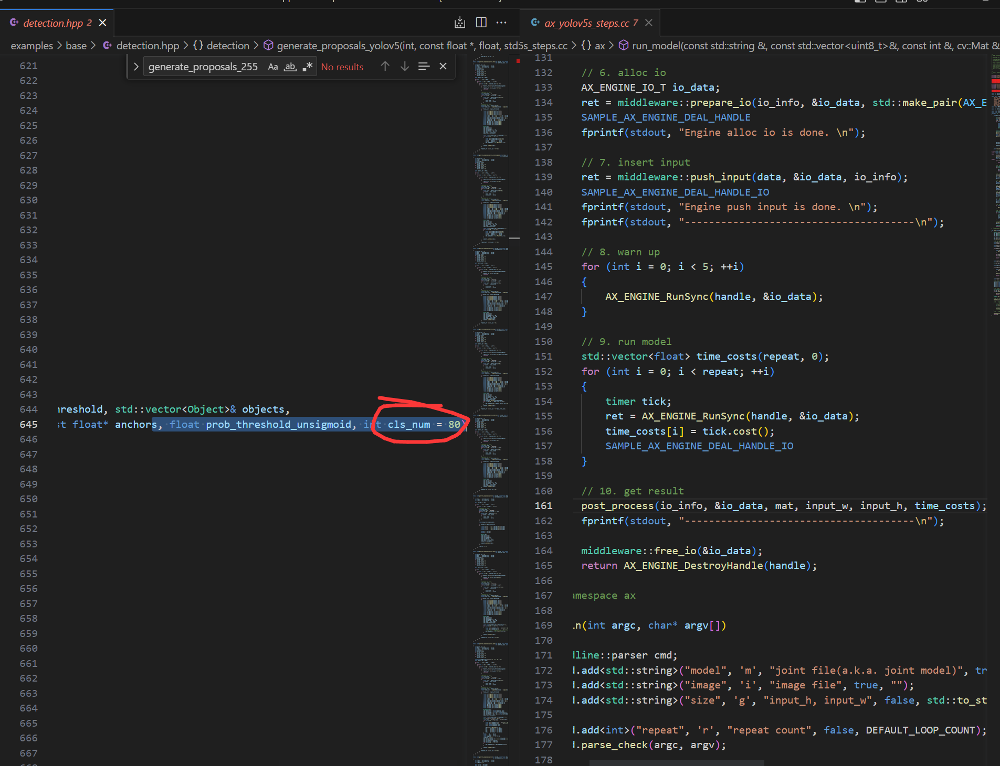

中文
中文爱芯元智AX650N部署yolov5s 自定义模型
本博客将向你展示零基础一步步的部署好自己的yolov5s模型（博主展示的是安全帽模型），利用yolov5 官方的代码工具导出onnx模型，并通过onnxsim自带的工具精简网络结构，导出子图，为了Pulsar2 工具进行处理模型做准备。
获得自定义训练得到的yolov5s onnx模型
准备自定义数据集（博主用的是VOC数据集）
数据集目录结构如下：
└─VOC2028: 自定义数据集
├─Annotations 存放的是数据集标签文件，xml格式
├─ImageSets 数据集的划分文件
│ └─Main
├─JPEGImages 存放的是数据集图片
分割数据集
在split_train_val.py文件路径下执行python3 split_train_val.py会得到一下目录结构：
└─VOC2028: 自定义数据集
├─Annotations 存放的是数据集标签文件，xml格式
├─ImageSets 数据集的划分文件
│ └─Main test.txt
└─test.txt
└─train.txt
└─val.txt
├─JPEGImages 存放的是数据集图片
├─split_train_val.py 分割数据集的py文件
split_train_val.py文件代码如下：
# -*- coding: utf-8 -*-
"""
Author:dragonforward
简介：分训练集、验证集和测试集，按照 8：1：1 的比例来分，训练集8，验证集1，测试集1
"""
import os
import random
import argparse
parser = argparse.ArgumentParser()
# xml文件的地址，根据自己的数据进行修改 xml一般存放在Annotations下
parser.add_argument('--xml_path', default='Annotations/', type=str, help='input xml label path')
# 数据集的划分，地址选择自己数据下的ImageSets/Main
parser.add_argument('--txt_path', default='ImageSets/Main/', type=str, help='output txt label path')
opt = parser.parse_args()
train_percent = 0.8 # 训练集所占比例
val_percent = 0.1 # 验证集所占比例
test_persent = 0.1 # 测试集所占比例
xmlfilepath = opt.xml_path
txtsavepath = opt.txt_path
total_xml = os.listdir(xmlfilepath)
if not os.path.exists(txtsavepath):
os.makedirs(txtsavepath)
num = len(total_xml)
list = list(range(num))
t_train = int(num * train_percent)
t_val = int(num * val_percent)
train = random.sample(list, t_train)
num1 = len(train)
for i in range(num1):
list.remove(train[i])
val_test = [i for i in list if not i in train]
val = random.sample(val_test, t_val)
num2 = len(val)
for i in range(num2):
list.remove(val[i])
file_train = open(txtsavepath + '/train.txt', 'w')
file_val = open(txtsavepath + '/val.txt', 'w')
file_test = open(txtsavepath + '/test.txt', 'w')
for i in train:
name = total_xml[i][:-4] + '\n'
file_train.write(name)
for i in val:
name = total_xml[i][:-4] + '\n'
file_val.write(name)
for i in list:
name = total_xml[i][:-4] + '\n'
file_test.write(name)
file_train.close()
file_val.close()
file_test.close()
voc转label得到label文件
目录结构如下：
└─VOC2028: 自定义数据集
├─Annotations 存放的是数据集标签文件，xml格式
├─ImageSets 数据集的划分文件
│ └─Main
├─JPEGImages 存放的是数据集图片
└─labels yolov5将此文件夹当作训练的标注文件夹
└─voc_label.py
voc_label.py文件代码如下：
# -*- coding: utf-8 -*-
import xml.etree.ElementTree as ET
import os
sets = ['train', 'val', 'test'] # 如果你的Main文件夹没有test.txt，就删掉'test'
classes = ["hat", "people"] # 改成自己的类别，VOC数据集有以下20类别
# classes = ["brickwork", "coil","rebar"] # 改成自己的类别，VOC数据集有以下20类别
# classes = ["aeroplane", 'bicycle', 'bird', 'boat', 'bottle', 'bus', 'car', 'cat', 'chair', 'cow', 'diningtable', 'dog',
# 'horse', 'motorbike', 'person', 'pottedplant', 'sheep', 'sofa', 'train', 'tvmonitor'] # class names
# abs_path = os.getcwd() /root/yolov5/data/voc_label.py
abs_path = '/root/yolov5/data/'
def convert(size, box):
dw = 1. / (size[0])
dh = 1. / (size[1])
x = (box[0] + box[1]) / 2.0 - 1
y = (box[2] + box[3]) / 2.0 - 1
w = box[1] - box[0]
h = box[3] - box[2]
x = x * dw
w = w * dw
y = y * dh
h = h * dh
return x, y, w, h
def convert_annotation(image_id):
in_file = open(abs_path + '/VOC2028/Annotations/%s.xml' % (image_id), encoding='UTF-8')
out_file = open(abs_path + '/VOC2028/labels/%s.txt' % (image_id), 'w')
tree = ET.parse(in_file)
root = tree.getroot()
size = root.find('size')
w = int(size.find('width').text)
h = int(size.find('height').text)
for obj in root.iter('object'):
difficult = obj.find('difficult').text
# difficult = obj.find('Difficult').text
cls = obj.find('name').text
if cls not in classes or int(difficult) == 1:
continue
cls_id = classes.index(cls)
xmlbox = obj.find('bndbox')
b = (float(xmlbox.find('xmin').text), float(xmlbox.find('xmax').text), float(xmlbox.find('ymin').text),
float(xmlbox.find('ymax').text))
b1, b2, b3, b4 = b
# 标注越界修正
if b2 > w:
b2 = w
if b4 > h:
b4 = h
b = (b1, b2, b3, b4)
bb = convert((w, h), b)
out_file.write(str(cls_id) + " " + " ".join([str(a) for a in bb]) + '\n')
for image_set in sets:
if not os.path.exists(abs_path + '/VOC2028/labels/'):
os.makedirs(abs_path + '/VOC2028/labels/')
image_ids = open(abs_path + '/VOC2028/ImageSets/Main/%s.txt' % (image_set)).read().strip().split()
list_file = open(abs_path + '/VOC2028/%s.txt' % (image_set), 'w')
for image_id in image_ids:
list_file.write(abs_path + '/VOC2028/JPEGImages/%s.jpg\n' % (image_id)) # 要么自己补全路径，只写一半可能会报错
convert_annotation(image_id)
list_file.close()

训练模型
- 配置环境
git clone https://github.com/ultralytics/yolov5
cd yolov5
pip install -r requirements.txt
pip install onnx
- 下载预训练权重（博主尝试了v7.0的和v6.0的pt都可以）
https://github.com/ultralytics/yolov5/releases/download/v7.0/yolov5s.pt

- 训练（博主使用的是学校的集群进行训练）
python3 train.py --weights weights/yolov5s.pt --cfg models/yolov5s.yaml --data data/safthat.yaml --epochs 150 --batch-size 16 --multi-scale --device 0

python3 detect.py --source /root/yolov5/data/images/000000.jpg --weights /root/yolov5/runs/train/exp13/weights/best.pt --conf-thres 0.25

- 导出onnx模型，并通过onnxsim自带的工具精简网络结构，导出子图
python3 export.py --weights yolov5s_hat.pt --include onnx
pip install onnx-simplifier
python3 -m onnxsim yolov5s_hat.onnx yolov5s_hat_sub.onnx

模型查看通过网址输入netron.app查看三个输出：

查看官方给的yolov5s.json文件：
{
"model_type": "ONNX",
"npu_mode": "NPU1",
"quant": {
"input_configs": [
{
"tensor_name": "images",
"calibration_dataset": "./dataset/calibration_dataset.tar.gz",
"calibration_size": 4,
"calibration_mean": [0, 0, 0],
"calibration_std": [255.0, 255.0, 255.0]
}
],
"calibration_method": "MinMax",
"precision_analysis": false
},
"input_processors": [
{
"tensor_name": "images",
"tensor_format": "BGR",
"src_format": "BGR",
"src_dtype": "U8",
"src_layout": "NHWC"
}
],
"output_processors": [
{
"tensor_name": "326",
"dst_perm": [0, 2, 3, 1]
},
{
"tensor_name": "370",
"dst_perm": [0, 2, 3, 1]
},
{
"tensor_name": "414",
"dst_perm": [0, 2, 3, 1]
}
],
"compiler": {
"check": 0
}
}
output_processors给的326，370，414
根据秋水大佬博客的导出子图文件修改得到适应pulsar2工具的onnx文件：
import onnx
input_path = "yolov5s_hat-sim.onnx"
output_path = "yolov5s_hat_sub.onnx"
input_names = ["images"]
output_names = ["326","370","414"]
onnx.utils.extract_model(input_path, output_path, input_names, output_names)
问题记录：
（1）导出子图很关键
由于之前对深度学习知识了解很少，才知道子图，如果执行使用yolov5s_hat_sub.onnx，在Pulsar2工具中进行量化的话，会生成axmodel但是是无法执行了，通过o0圏圏蟲0o大佬给的模型对比网络结构和秋水大佬的ax620a部署yolov5博客才明白自己问题出现在哪里
如果你没处理导出子图得到的图会是这样：

正确量化后的yolov5s图：
官方的yolov5s模型：

博主的正确的axmodel：

其中数字不同255和21的原因（秋水大佬博客有讲）：
该数字为（模型训练的类别+5）*3，博主类别为2类，所以就是21
模型转化（关键）
安装docker环境（已安装过的可以跳过）
安装docker依赖的基础软件
sudo apt-get update
sudo apt-get install apt-transport-https ca-certificates curl gnupg-agent software-properties-common
添加官方来源
curl -fsSL https://download.docker.com/linux/ubuntu/gpg | sudo apt-key add -
sudo add-apt-repository "deb [arch=amd64] https://download.docker.com/linux/ubuntu $(lsb_release -cs) stable"
安装 docker
sudo apt-get update
sudo apt-get install docker-ce docker-ce-cli containerd.io
pulsar2工具模型转化以及仿真运行
- 下载pulsar2工具（博主使用的是1.9）
quick_start_example 文件夹
其中文件如下：
config dataset model output pulsar2-run-helper
./dataset/calibration_data.tar：添加了数据集的四张照片
config文件：
{
"model_type": "ONNX",
"npu_mode": "NPU1",
"quant": {
"input_configs": [
{
"tensor_name": "images",
"calibration_dataset": "./dataset/calibration_data.tar",
"calibration_size": 4,
"calibration_mean": [0, 0, 0],
"calibration_std": [255.0, 255.0, 255.0]
}
],
"calibration_method": "MinMax",
"precision_analysis": false
},
"input_processors": [
{
"tensor_name": "images",
"tensor_format": "BGR",
"src_format": "BGR",
"src_dtype": "U8",
"src_layout": "NHWC"
}
],
"output_processors": [
{
"tensor_name": "326",
"dst_perm": [0, 2, 3, 1]
},
{
"tensor_name": "370",
"dst_perm": [0, 2, 3, 1]
},
{
"tensor_name": "414",
"dst_perm": [0, 2, 3, 1]
}
],
"compiler": {
"check": 0
}
}
（博主是直接就是root用户，如果不是root用户记得加sudo）
root@LAPTOP-U638FQQS:~# docker load -i ax_pulsar2_1.9_enc.tar.gz
root@LAPTOP-U638FQQS:~# docker images -a
REPOSITORY TAG IMAGE ID CREATED SIZE
hhb4tools/rv_debian_build 1.3 08f478d17c34 7 weeks ago 2.16GB
pulsar2 1.9_enc 641ba18a8da3 2 months ago 3.46GB
hhb4tools/hhb 2.4.5 58df969ae05a 3 months ago 8.16GB
hhb4tools/rv_ub20_build 1.4 a65456ded4f0 6 months ago 5.11GB
hhb4tools/march-user-static 1.0 d9efab34da5e 7 months ago 301MB
riscv64/ubuntu 22.04 8b55084b9c02 11 months ago 61.6MB
riscv64/ubuntu 21.04 d0b60ed75c22 21 months ago 60.3MB
root@LAPTOP-U638FQQS:~#docker run -it --net host --rm -v $PWD:/data pulsar2:1.9_enc
root@1657ec5355e2:/data# pulsar2 version
version: 1.9
commit: c62d0b64
root@1657ec5355e2:/data#
- 编译执行
以 yolov5s_hat_sub.onnx 为例, 执行如下 pulsar2 build 命令编译生成 compiled.axmodel:
pulsar2 build --input model/yolov5s_hat_sub.onnx --output_dir output --config config/yolov5s_config.json
博主输出信息：
root@1657ec5355e2:/data# pulsar2 build --input model/yolov5s_hat_sub.onnx --output_dir output --config config/yolov5s_config.json
2023-11-16 17:49:21.238 | WARNING | yamain.command.build:fill_default:320 - ignore images csc config because of src_format is AutoColorSpace or src_format and tensor_format are the same
Building onnx ━━━━━━━━━━━━━━━━━━━━━━━━━━━━━━━━━━━━━━━━ 100% 0:00:00
2023-11-16 17:49:22.486 | INFO | yamain.command.build:build:444 - save optimized onnx to [output/frontend/optimized.onnx]
2023-11-16 17:49:22.489 | INFO | yamain.common.util:extract_archive:21 - extract [dataset/calibration_data.tar] to [output/quant/dataset/images]...
Quant Config Table
┏━━━━━━━━┳━━━━━━━━━━━━━━━━━━┳━━━━━━━━━━━━━━━━━━━┳━━━━━━━━━━━━━┳━━━━━━━━━━━━━━━┳━━━━━━━━━━━━━━━━━┳━━━━━━━━━━━━━━━━━━━━━━━┓
┃ Input ┃ Shape ┃ Dataset Directory ┃ Data Format ┃ Tensor Format ┃ Mean ┃ Std ┃
┡━━━━━━━━╇━━━━━━━━━━━━━━━━━━╇━━━━━━━━━━━━━━━━━━━╇━━━━━━━━━━━━━╇━━━━━━━━━━━━━━━╇━━━━━━━━━━━━━━━━━╇━━━━━━━━━━━━━━━━━━━━━━━┩
│ images │ [1, 3, 640, 640] │ images │ Image │ BGR │ [0.0, 0.0, 0.0] │ [255.0, 255.0, 255.0] │
└────────┴──────────────────┴───────────────────┴─────────────┴───────────────┴─────────────────┴───────────────────────┘
Transformer optimize level: 0
4 File(s) Loaded.
[17:49:24] AX LSTM Operation Format Pass Running ... Finished.
[17:49:24] AX Set MixPrecision Pass Running ... Finished.
[17:49:24] AX Refine Operation Config Pass Running ... Finished.
[17:49:24] AX Reset Mul Config Pass Running ... Finished.
[17:49:24] AX Tanh Operation Format Pass Running ... Finished.
[17:49:24] AX Confused Op Refine Pass Running ... Finished.
[17:49:24] AX Quantization Fusion Pass Running ... Finished.
[17:49:24] AX Quantization Simplify Pass Running ... Finished.
[17:49:24] AX Parameter Quantization Pass Running ... Finished.
Calibration Progress(Phase 1): 100%|███████████████████████████████████████████████████████████████████████████████| 4/4 [00:01<00:00, 2.16it/s]
Finished.
[17:49:26] AX Passive Parameter Quantization Running ... Finished.
[17:49:26] AX Parameter Baking Pass Running ... Finished.
[17:49:26] AX Refine Int Parameter Pass Running ... Finished.
[17:49:26] AX Refine Weight Parameter Pass Running ... Finished.
--------- Network Snapshot ---------
Num of Op: [142]
Num of Quantized Op: [142]
Num of Variable: [267]
Num of Quantized Var: [267]
------- Quantization Snapshot ------
Num of Quant Config: [430]
BAKED: [60]
OVERLAPPED: [168]
ACTIVATED: [138]
SOI: [4]
PASSIVE_BAKED: [60]
Network Quantization Finished.
quant.axmodel export success: output/quant/quant_axmodel.onnx
===>export input/output data to folder: output/quant/debug/test_data_set_0
Building native ━━━━━━━━━━━━━━━━━━━━━━━━━━━━━━━━━━━━━━━━ 100% 0:00:00
2023-11-16 17:49:28.704 | WARNING | yamain.command.load_model:pre_process:454 - preprocess tensor [images]
2023-11-16 17:49:28.704 | INFO | yamain.command.load_model:pre_process:456 - tensor: images, (1, 640, 640, 3), U8
2023-11-16 17:49:28.705 | INFO | yamain.command.load_model:pre_process:456 - op: op:pre_dequant_1, AxDequantizeLinear, {'const_inputs': {'x_zeropoint': array(0, dtype=int32), 'x_scale': array(1., dtype=float32)}, 'output_dtype': <class 'numpy.float32'>, 'quant_method': 0}
2023-11-16 17:49:28.705 | INFO | yamain.command.load_model:pre_process:456 - tensor: tensor:pre_norm_1, (1, 640, 640, 3), FP32
2023-11-16 17:49:28.705 | INFO | yamain.command.load_model:pre_process:456 - op: op:pre_norm_1, AxNormalize, {'dim': 3, 'mean': [0.0, 0.0, 0.0], 'std': [255.0, 255.0, 255.0]}
2023-11-16 17:49:28.705 | INFO | yamain.command.load_model:pre_process:456 - tensor: tensor:pre_transpose_1, (1, 640, 640, 3), FP32
2023-11-16 17:49:28.705 | INFO | yamain.command.load_model:pre_process:456 - op: op:pre_transpose_1, AxTranspose, {'perm': [0, 3, 1, 2]}
2023-11-16 17:49:28.705 | WARNING | yamain.command.load_model:post_process:475 - postprocess tensor [326]
2023-11-16 17:49:28.705 | INFO | yamain.command.load_model:handle_postprocess:473 - op: op:post_transpose_1, AxTranspose
2023-11-16 17:49:28.705 | WARNING | yamain.command.load_model:post_process:475 - postprocess tensor [370]
2023-11-16 17:49:28.706 | INFO | yamain.command.load_model:handle_postprocess:473 - op: op:post_transpose_2, AxTranspose
2023-11-16 17:49:28.706 | WARNING | yamain.command.load_model:post_process:475 - postprocess tensor [414]
2023-11-16 17:49:28.706 | INFO | yamain.command.load_model:handle_postprocess:473 - op: op:post_transpose_3, AxTranspose
tiling op... ━━━━━━━━━━━━━━━━━━━━━━━━━━━━━━━━━━━━━━━━━━━━━━━━━━━━━━━━━━━━━━━━━━━━━━━━━━━━━━━━━━━━━━━━━━━━━━━━━━━━━━━━━━━━━━━━━━ 241/241 0:00:00
new_ddr_tensor = []
<frozen backend.ax650npu.oprimpl.normalize>:186: RuntimeWarning: divide by zero encountered in divide
<frozen backend.ax650npu.oprimpl.normalize>:187: RuntimeWarning: invalid value encountered in divide
build op... ━━━━━━━━━━━━━━━━━━━━━━━━━━━━━━━━━━━━━━━━━━━━━━━━━━━━━━━━━━━━━━━━━━━━━━━━━━━━━━━━━━━━━━━━━━━━━━━━━━━━━━━━━━━━━━━━━ 1177/1177 0:00:04
add ddr swap... ━━━━━━━━━━━━━━━━━━━━━━━━━━━━━━━━━━━━━━━━━━━━━━━━━━━━━━━━━━━━━━━━━━━━━━━━━━━━━━━━━━━━━━━━━━━━━━━━━━━━━━━━━━━━━ 1141/1141 0:00:00
calc input dependencies... ━━━━━━━━━━━━━━━━━━━━━━━━━━━━━━━━━━━━━━━━━━━━━━━━━━━━━━━━━━━━━━━━━━━━━━━━━━━━━━━━━━━━━━━━━━━━━━━━━━ 1437/1437 0:00:00
calc output dependencies... ━━━━━━━━━━━━━━━━━━━━━━━━━━━━━━━━━━━━━━━━━━━━━━━━━━━━━━━━━━━━━━━━━━━━━━━━━━━━━━━━━━━━━━━━━━━━━━━━━ 1437/1437 0:00:00
assign eu heuristic ━━━━━━━━━━━━━━━━━━━━━━━━━━━━━━━━━━━━━━━━━━━━━━━━━━━━━━━━━━━━━━━━━━━━━━━━━━━━━━━━━━━━━━━━━━━━━━━━━━━━━━━━━ 1437/1437 0:00:00
assign eu onepass ━━━━━━━━━━━━━━━━━━━━━━━━━━━━━━━━━━━━━━━━━━━━━━━━━━━━━━━━━━━━━━━━━━━━━━━━━━━━━━━━━━━━━━━━━━━━━━━━━━━━━━━━━━━ 1437/1437 0:00:00
assign eu greedy ━━━━━━━━━━━━━━━━━━━━━━━━━━━━━━━━━━━━━━━━━━━━━━━━━━━━━━━━━━━━━━━━━━━━━━━━━━━━━━━━━━━━━━━━━━━━━━━━━━━━━━━━━━━━ 1437/1437 0:00:00
2023-11-16 17:49:34.720 | INFO | yasched.test_onepass:results2model:2004 - max_cycle = 4,846,471
2023-11-16 17:49:35.349 | INFO | yamain.command.build:compile_npu_subgraph:1076 - QuantAxModel macs: 7,881,318,400
2023-11-16 17:49:35.352 | INFO | yamain.command.build:compile_npu_subgraph:1084 - use random data as gt input: images, uint8, (1, 640, 640, 3)
2023-11-16 17:49:38.687 | INFO | yamain.command.build:compile_ptq_model:1003 - fuse 1 subgraph(s)
root@1657ec5355e2:/data#
- 模型仿真运行
cp output/compiled.axmodel pulsar2-run-helper/models/yolov5s_hat.axmodel
输入数据准备
python3 cli_detection.py --pre_processing --image_path sim_images/000032.jpg --axmodel_path models/yolov5s_hat.axmodel --intermediate_path sim_inputs/0
输出信息：
root@1657ec5355e2:/data/pulsar2-run-helper# python3 cli_detection.py --pre_processing --image_path sim_images/000032.jpg --axmodel_path models/yolov5s_hat.axmodel --intermediate_path sim_inputs/0
[I] Write [images] to 'sim_inputs/0/images.bin' successfully.
仿真模型推理
pulsar2 run --model models/yolov5s_hat.axmodel --input_dir sim_inputs --output_dir sim_outputs --list list.txt
输出信息：
root@1657ec5355e2:/data/pulsar2-run-helper# pulsar2 run --model models/yolov5s_hat.axmodel --input_dir sim_inputs --output_dir sim_outputs --list list.txt
Building native ━━━━━━━━━━━━━━━━━━━━━━━━━━━━━━━━━━━━━━━━ 100% 0:00:00
>>> [0] start
write [326] to [sim_outputs/0/326.bin] successfully
write [370] to [sim_outputs/0/370.bin] successfully
write [414] to [sim_outputs/0/414.bin] successfully
>>> [0] finish
输出数据处理（记得指定图片路径）
python3 cli_detection.py --post_processing --image_path sim_images/000032.jpg --axmodel_path models/yolov5s_hat.axmodel --intermediate_path sim_outputs/0
输出信息：
root@1657ec5355e2:/data/pulsar2-run-helper# python3 cli_detection.py --post_processing --image_path sim_images/000032.jpg --axmodel_path models/yolov5s_hat.axmodel --intermediate_path sim_outputs/0
[I] Number of detected objects: 7
[I] 0: 94.59%, [972, 224, 1089, 345]
[I] 0: 94.56%, [886, 222, 970, 327]
[I] 0: 94.12%, [1141, 145, 1262, 281]
[I] 0: 93.96%, [487, 249, 571, 370]
[I] 0: 93.94%, [331, 201, 430, 341]
[I] 0: 93.27%, [186, 192, 302, 351]
[I] 0: 62.17%, [607, 233, 692, 338]
root@1657ec5355e2:/data/pulsar2-run-helper#
具体工具文档如下：
pulsar2工具文档
开发板运行
开发板镜像为1.27版本，采用本地编译
下载源码：
git clone https://github.com/AXERA-TECH/ax-samples.git
修改ax_yolov5s_steps.cc文件中：
修改classname标签
const char* CLASS_NAMES[] = {
"person", "hat"};
generate_proposals_yolov5函数指定classnum数量为2
for (uint32_t i = 0; i < io_info->nOutputSize; ++i)
{
auto& output = io_data->pOutputs[i];
auto& info = io_info->pOutputs[i];
auto ptr = (float*)output.pVirAddr;
int32_t stride = (1 << i) * 8;
detection::generate_proposals_yolov5(stride, ptr, PROB_THRESHOLD, proposals, input_w, input_h, ANCHORS, prob_threshold_u_sigmoid,2);
}
修改的原因是它默认为80，不然会报错下面信息：
root@maixbox:/home/ax-samples/build/install/ax650# ./ax_yolov5s -m yolov5s_hat.axmodel -i 000032.jpg
--------------------------------------
model file : yolov5s_hat.axmodel
image file : 000032.jpg
img_h, img_w : 640 640
--------------------------------------
WARN,Func(__is_valid_file),NOT find file = '/etc/ax_syslog.conf'
ERROR,Func(__syslog_parma_cfg_get), NOT find = '/etc/ax_syslog.conf'
Engine creating handle is done.
Engine creating context is done.
Engine get io info is done.
Engine alloc io is done.
Engine push input is done.
--------------------------------------
Segmentation fault

cd ax-samples
mkdir build && cd build
cmake -DBSP_MSP_DIR=/soc/ -DAXERA_TARGET_CHIP=ax650 ..
make -j6
make install
编译完成后，生成的可执行示例存放在 ax-samples/build/install/ax650/ 路径下：
ax-samples/build$ tree install
install
└── ax650
├── ax_classification
├── ax_detr
├── ax_dinov2
├── ax_glpdepth
├── ax_hrnet
├── ax_imgproc
├── ax_pfld
├── ax_pp_humanseg
├── ax_pp_liteseg_stdc2_cityscapes
├── ax_pp_ocr_rec
├── ax_pp_person_attribute
├── ax_pp_vehicle_attribute
├── ax_ppyoloe
├── ax_ppyoloe_obj365
├── ax_realesrgan
├── ax_rtmdet
├── ax_scrfd
├── ax_segformer
├── ax_simcc_pose
├── ax_yolo_nas
├── ax_yolov5_face
├── ax_yolov5s
├── ax_yolov5s_seg
├── ax_yolov6
├── ax_yolov7
├── ax_yolov7_tiny_face
├── ax_yolov8
├── ax_yolov8_pose
└── ax_yolox
讲axmodel模型放在可执行文件下和测试图片：
root@maixbox:/home/ax-samples/build/install/ax650# ./ax_yolov5s -m yolov5s_hat.axmodel -i 000032.jpg
--------------------------------------
model file : yolov5s_hat.axmodel
image file : 000032.jpg
img_h, img_w : 640 640
--------------------------------------
WARN,Func(__is_valid_file),NOT find file = '/etc/ax_syslog.conf'
ERROR,Func(__syslog_parma_cfg_get), NOT find = '/etc/ax_syslog.conf'
Engine creating handle is done.
Engine creating context is done.
Engine get io info is done.
Engine alloc io is done.
Engine push input is done.
--------------------------------------
post process cost time:0.42 ms
--------------------------------------
Repeat 1 times, avg time 6.15 ms, max_time 6.15 ms, min_time 6.15 ms
--------------------------------------
detection num: 7
0: 95%, [ 981, 221, 1080, 342], person
0: 95%, [ 332, 201, 431, 341], person
0: 95%, [ 886, 222, 970, 327], person
0: 94%, [1141, 140, 1262, 290], person
0: 94%, [ 187, 197, 300, 347], person
0: 94%, [ 487, 252, 571, 373], person
0: 91%, [ 605, 232, 689, 337], person
--------------------------------------


感谢
感谢o0圏圏蟲0o,无事闲来，梦醒时分，N/A，秋水等大佬的帮助